Cite as: “RD Pascual-Marqui: Instantaneous and lagged measurements of linear and nonlinear dependence between groups of
multivariate time series: frequency decomposition. arXiv:0711.1455 [stat.ME], 2007-November-09, http://arxiv.org/abs/0711.1455 ”
Page 1 of 18
Instantaneous and lagged measurements of linear and
nonlinear dependence between groups of multivariate time
series: frequency decomposition
Roberto D. Pascual-Marqui
The KEY Institute for Brain-Mind Research
University Hospital of Psychiatry
Lenggstr. 31, CH-8032 Zurich, Switzerland
pascualm at key.uzh.ch
1.
Abstract
Measures of linear dependence (coherence) and nonlinear dependence (phase
synchronization) between any number of multivariate time series are defined. The measures
are
expressed as the sum of lagged dependence and instantaneous dependence. The
measures are non-negative, and take the value zero only when there is independence of the
pertinent type. These measures are defined in the frequency domain and are applicable to
stationary and non-stationary time series. These new results extend and refine significantly
those presented in a previous technical report (Pascual-Marqui
2007, arXiv:0706.1776
[stat.ME], http://arxiv.org/abs/0706.1776 ), and have been largely motivated by the seminal
paper on linear feedback by Geweke (1982 JASA 77:304-313).
One important field of
application is neurophysiology, where the time series consist of electric neuronal activity at
several brain locations. Coherence and
phase synchronization are
interpreted as
“connectivity” between locations. However, any measure of dependence is highly
contaminated with an instantaneous, non-physiological contribution due to volume
conduction and low spatial resolution. The new techniques remove this confounding factor
considerably. Moreover, the measures of dependence can be applied to any number of brain
areas
jointly, i.e. distributed cortical networks, whose activity can be estimated with
eLORETA (Pascual-Marqui 2007, arXiv:0710.3341 [math-ph], http://arxiv.org/abs/0710.3341 ).
2.
Introduction
This study extends and refines significantly the results presented in a previous
technical report (Pascual-Marqui
2007a).
Some
results from that
previous paper will be
repeated here for the sake of completeness.
2.1.
The discrete Fourier transform for multivariate time series
The terms “multivariate time series”, “multiple time series”, and “vector time series”
have identical meaning in this paper.

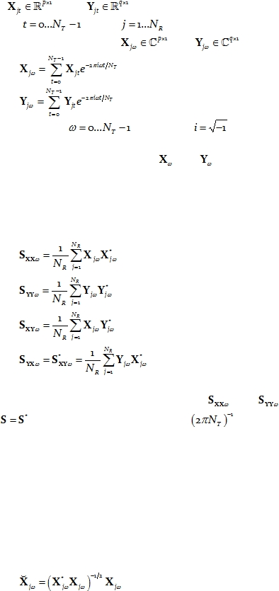
Cite as: “RD Pascual-Marqui: Instantaneous and lagged measurements of linear and nonlinear dependence between groups of
multivariate time series: frequency decomposition. arXiv:0711.1455 [stat.ME], 2007-November-09, http://arxiv.org/abs/0711.1455 ”
Page 2 of 18
For general notation and definitions, see e.g. Brillinger (1981)
for stationary
multivariate time series analysis, and
see e.g. Mardia et al (1979)
for general multivariate
statistics.
Let
and
denote two stationary multivariate time series,
for
discrete time
,
with
denoting the j-th time segment.
The discrete
Fourier transforms are denoted as
and
, and defined as:
Eq. 1
Eq. 2
for discrete frequencies
, and where
.
It will be assumed throughout that
and
each have zero mean.
2.2.
Classical cross-spectra
Let:
Eq. 3
Eq. 4
Eq. 5
Eq. 6
denote complex valued covariance matrices, where the superscript “*” denotes vector/matrix
transposition and complex conjugation. Note that
and
are Hermitian matrices,
satisfying
.
When multiplied by the factor
, these matrices correspond to the
classical cross-spectral density matrices.
2.3.
Phase-information cross-spectra
The discrete Fourier transforms in Eq. 1 and Eq. 2 contain both phase and amplitude
information, which carries over to the covariance matrices in Eq. 3, Eq. 4, Eq. 5, and Eq. 6.
This means that for the analysis of phase information, the amplitudes must be factored out
by an appropriate normalization method. This is achieved by using the following definition
for the normalized complex-valued discrete Fourier transform vector:
Eq. 7
and:

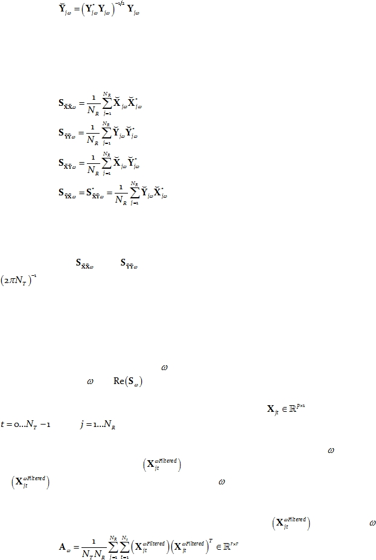
Cite as: “RD Pascual-Marqui: Instantaneous and lagged measurements of linear and nonlinear dependence between groups of
multivariate time series: frequency decomposition. arXiv:0711.1455 [stat.ME], 2007-November-09, http://arxiv.org/abs/0711.1455 ”
Page 3 of 18
Eq. 8
Note that this normalization operation, although deceivingly simple, is a highly
nonlinear transformation.
The corresponding covariance matrices containing phase information (without
amplitude information) are:
Eq. 9
Eq. 10
Eq. 11
Eq. 12
Note that the normalization used in Eq. 7 and Eq. 8 will be the basis for the analysis
of phase synchronization between the multivariate time series X and Y.
Note that
and
are Hermitian matrices. When multiplied by the factor
, these matrices correspond to what is defined here as the phase-information cross-
spectra.
2.4.
Instantaneous, zero-phase, zero-lag covariance
The instantaneous, zero-phase, zero-lag covariance
matrix corresponding to a
multivariate time series at frequency
, is simply the real part of the Hermitian covariance
matrix at frequency
, i.e.
.
To justify
this, consider the multivariate time series
, for discrete time
, with
denoting the j-th time segment.
In a first step, filter the time series to leave exclusively the frequency
component.
Denote the filtered time series as
. Note that, by construction, the spectral density
of
is zero everywhere except at frequency
.
In a second step, compute the instantaneous, zero-lag, zero phase shifted, time
domain, symmetric covariance matrix for the filtered time series
at frequency
:
Eq. 13

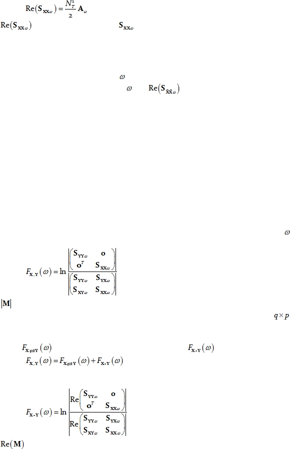
Cite as: “RD Pascual-Marqui: Instantaneous and lagged measurements of linear and nonlinear dependence between groups of
multivariate time series: frequency decomposition. arXiv:0711.1455 [stat.ME], 2007-November-09, http://arxiv.org/abs/0711.1455 ”
Page 4 of 18
Finally, by making use of Parseval’s theorem for the filtered time series, the following
relation holds:
Eq. 14
where
denotes the real part of
given by Eq. 3 above.
These arguments apply identically to the normalized time series, as in Eq. 7 to Eq. 12
above, when considering the phase-information cross-spectra. This means that the
instantaneous, zero-phase, zero-lag covariance
matrix corresponding to a normalized
multivariate time series X at frequency
, is simply the real part of the phase-information
Hermitian covariance matrix at frequency
, i.e.
.
The section entitled “Appendix 1” gives a brief description of the problems that arise
in neurophysiology, where any measure of dependence is highly contaminated with an
instantaneous, non-physiological contribution due to volume conduction and low spatial
resolution.
3.
Measures of linear dependence (coherence-type) between two
multivariate time series
The definitions presented here are largely motivated by the seminal paper on linear
feedback by Geweke (1982).
The measure of linear dependence between time series X
and Y
at
frequency
is
defined as:
Eq. 15
where
denotes the determinant of M. The matrix in the numerator of Eq. 15 is a block-
diagonal matrix, with 0 denoting a matrix of zeros, which in this case is of dimension
.
This measure of linear dependence is expressed as the sum of the lagged linear
dependence
and instantaneous linear dependence
:
Eq. 16
The measure of instantaneous linear dependence is defined as:
Eq. 17
where
denotes the real part of M.

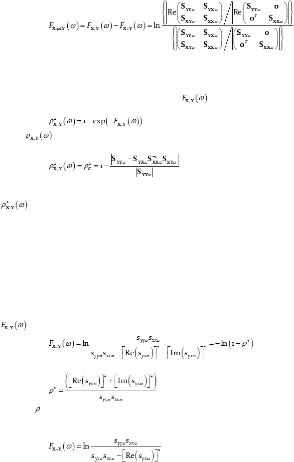
Cite as: “RD Pascual-Marqui: Instantaneous and lagged measurements of linear and nonlinear dependence between groups of
multivariate time series: frequency decomposition. arXiv:0711.1455 [stat.ME], 2007-November-09, http://arxiv.org/abs/0711.1455 ”
Page 5 of 18
Finally, the measure of lagged linear dependence is:
Eq. 18
All three measures are non-negative. They take the value zero only when there is
independence of the pertinent type (lagged, instantaneous, or both).
Not that the measure of linear dependence
in Eq. 15
can be interpreted as
follows:
Eq. 19
where
was defined as the general coherence in Pascual-Marqui (2007a; see Eq. 7
therein):
Eq. 20
Some relevant literature that motivated the definition of the general coherence
in the previous study (Pascual-Marqui 2007a) follows.
In the case of real-valued
stochastic variables, Mardia et al (1979) review several “measures of correlation between
vectors”. In particular, Kent (1983) proposed a general measure of correlation that is closely
related to the vector alienation coefficient (Hotelling 1936, Mardia et al 1979). This measure
of general coherence is also equivalent to the coefficient of determination as defined by
Pierce (1982).
All these definitions can be straightforwardly generalized to the
complex
valued domain.
In order to illustrate and further motivate these measures of linear dependence, a
detailed analysis for the simple case of two univariate time series is presented.
In the case that the two time series are univariate, the measure of linear dependence
in Eq. 15 is:
Eq. 21
where:
Eq. 22
In Eq. 22,
is the ordinary squared coherence (see e.g. Equation 3 in Nolte et al 2004).
The measure of instantaneous linear dependence is:
Eq. 23

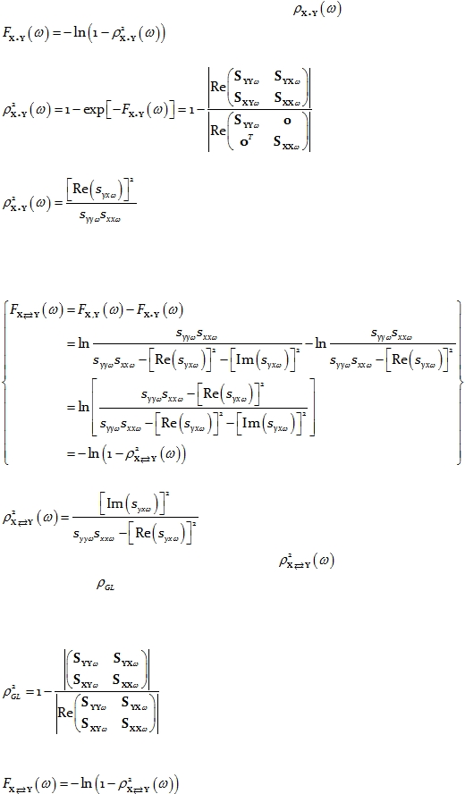
Cite as: “RD Pascual-Marqui: Instantaneous and lagged measurements of linear and nonlinear dependence between groups of
multivariate time series: frequency decomposition. arXiv:0711.1455 [stat.ME], 2007-November-09, http://arxiv.org/abs/0711.1455 ”
Page 6 of 18
Note that we can define the instantaneous coherence
as:
Eq. 24
In general, this gives:
Eq. 25
and in the case of univariate time series it simplifies to:
Eq. 26
which, not surprisingly, is directly related to the real part of the complex valued coherency.
Finally, in the particular case of univariate time series, the measure of lagged linear
dependence is:
Eq. 27
with:
Eq. 28
In Eq. 28, for the particular case of univariate time series,
is equal to the “zero-lag
removed general coherence”
defined in Pascual-Marqui (2007a).
In our previous related study (Pascual-Marqui 2007a), the general definition given
there for the “zero-lag removed coherence” (see Eq. 22 therein) was:
Eq. 29
The new definition given here for the lagged coherence follows from the relation:
Eq. 30
which gives:
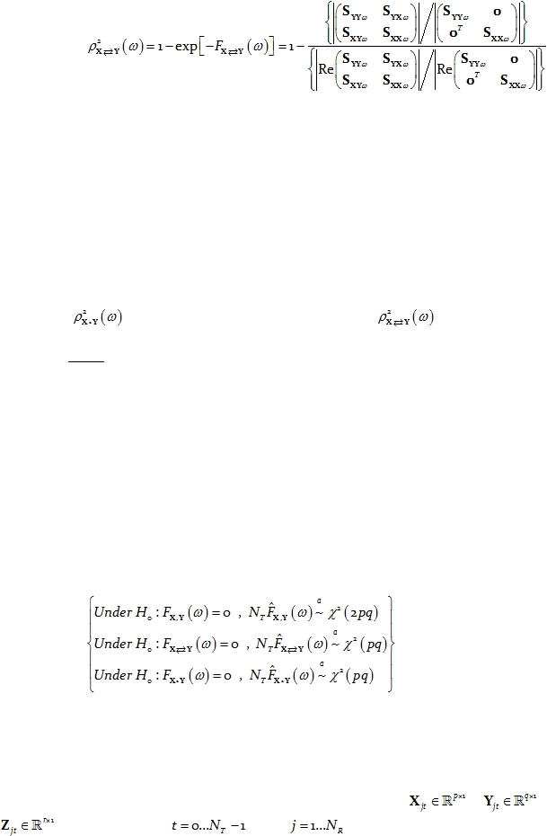
Cite as: “RD Pascual-Marqui: Instantaneous and lagged measurements of linear and nonlinear dependence between groups of
multivariate time series: frequency decomposition. arXiv:0711.1455 [stat.ME], 2007-November-09, http://arxiv.org/abs/0711.1455 ”
Page 7 of 18
Eq. 31
Both definitions (Eq. 29 and Eq. 31) are identical for the case of two univariate time
series. However, they are different for the multivariate case. Whereas the old definition in
Eq. 29
lumps together all variables from X
and Y, the new definition given here in Eq. 31
conserves the multivariate structure of the two multivariate time series. The improvement of
the new lagged coherence in Eq. 31 is that it measures the lagged linear dependence between
the two multivariate time series without being affected by the covariance structure within
each multivariate time series. The shortcoming of the old definition from our previous study
(Pascual-Marqui 2007a),
shown in Eq. 29, is that it is contaminated by the dependence
structures of the univariate time series within X and within Y.
Another point worth stressing is the asymmetry in the results for the instantaneous
coherence
(Eq. 26) and the lagged coherence
(Eq. 28). While the
instantaneous coherence is the real part of the complex valued coherency, the lagged
coherence is not
the imaginary part of the complex valued coherency.
Ideally, the lagged
coherence is a measure that is not affected by instantaneous dependence, whereas the
imaginary part of the complex valued coherency (Nolte et al 2004) is more affected by
instantaneous dependence
(Pascual-Marqui 2007a). This makes the lagged coherence (Eq.
31) a much more adequate measure of electrophysiological connectivity, because it removes
the confounding effect of instantaneous dependence due to volume conduction and low
spatial resolution (Pascual-Marqui 2007a).
Note that the measures of linear dependence defined by Eq. 15, Eq. 17, and Eq. 18 each
have the form of a ratio of variances, which compares the residuals of different models (i.e.
different dependent and independent variables). Under the assumption that the time series
are wide-sense stationary, large sample distribution theory can be used to test the null
hypothesis that a given measure of linear dependence is zero. Following the same
methodology as in Geweke (1982), the asymptotic distributions are:
Eq. 32
4.
Measures of linear dependence (coherence-type) between groups
of multivariate time series
Consider the case of three multivariate time series
,
, and
, for discrete time
, with
denoting the j-th time segment.

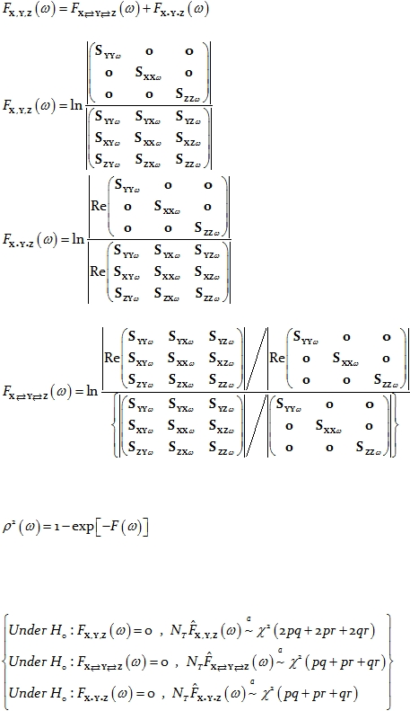
Cite as: “RD Pascual-Marqui: Instantaneous and lagged measurements of linear and nonlinear dependence between groups of
multivariate time series: frequency decomposition. arXiv:0711.1455 [stat.ME], 2007-November-09, http://arxiv.org/abs/0711.1455 ”
Page 8 of 18
The measures of linear dependence between the three multivariate time series are
related in the usual way:
Eq. 33
and are given by:
Eq. 34
Eq. 35
and:
Eq. 36
Coherences for each type of measure of linear dependence in Eq. 33
are defined
by
the general relation (see e.g. Pierce 1982):
Eq. 37
As previously argued, under the assumption that the time series are wide-sense
stationary, large sample distribution theory can be used to test the null hypothesis that a
given measure of linear dependence is zero. In this case, the asymptotic distributions are:
Eq. 38
The generalization of these definitions to any number of multivariate time series is
straightforward.
It is important to emphasize here that these measures of linear dependence for
groups of multivariate time series can be applied in the field of neurophysiology. In this

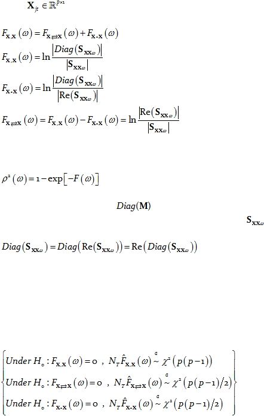
Cite as: “RD Pascual-Marqui: Instantaneous and lagged measurements of linear and nonlinear dependence between groups of
multivariate time series: frequency decomposition. arXiv:0711.1455 [stat.ME], 2007-November-09, http://arxiv.org/abs/0711.1455 ”
Page 9 of 18
case, the time series consist of electric neuronal activity at several brain locations, and the
measures of dependence are interpreted as “connectivity” between locations. When
considering several brain locations, these new measures can be used to test for the existence
of distributed cortical networks, whose activity can be estimated with exact low resolution
brain electromagnetic tomography (Pascual-Marqui 2007b).
5.
Measures of linear dependence (coherence-type) between all
univariate time series
A particular case of interest consists of measuring the linear dependence between all
the univariate time series that form part of the vector time series. For instance, consider the
vector time series
. Then the measures of linear dependence between all “p”
univariate time series of X are:
Eq. 39
Eq. 40
Eq. 41
Eq. 42
Coherences for each type of measure of linear dependence in Eq. 39
are defined by
the general relation (see e.g. Pierce 1982):
Eq. 43
In Eq. 40 and Eq. 41, the notation
denotes a diagonal matrix formed by the
diagonal elements of M. Note that for Hermitian matrices, such as
, the diagonal
elements are pure real, which implies that:
Eq. 44
As a consistency check, it can easily be verified that when these definitions are
applied to a vector time series with 2 components, the same results are obtained as in the
case of two univariate time series (Eq. 21, Eq. 23, and Eq. 27).
Under the assumption that the time series are wide-sense stationary, large sample
distribution theory can be used to test the null hypothesis that a given measure of linear
dependence is zero. In this case, the asymptotic distributions are:
Eq. 45

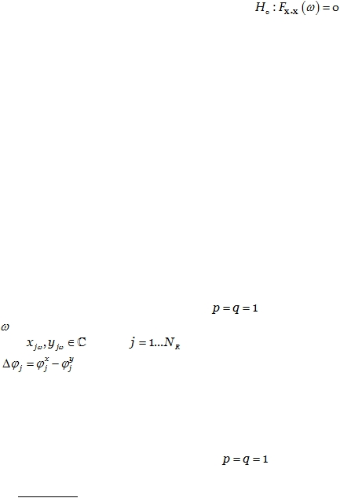
Cite as: “RD Pascual-Marqui: Instantaneous and lagged measurements of linear and nonlinear dependence between groups of
multivariate time series: frequency decomposition. arXiv:0711.1455 [stat.ME], 2007-November-09, http://arxiv.org/abs/0711.1455 ”
Page 10 of 18
As a further consistency check, note that the test
corresponds to the
classical case of testing if a real-valued correlation matrix is the identity matrix. The statistic
given above is precisely the log-likelihood ratio statistic, which is asymptotically chi-square
with the specified degrees of freedom (Kullback 1967).
6.
Measures of nonlinear dependence (phase synchronization type)
between two multivariate time series
The term “phase synchronization” has a very rigorous physics definition (see e.g.
Rosenblum et al 1996). The basic idea behind this definition has been adapted and used to
great advantage in the neurosciences (Tass et al 1998, Quian-Quiroga et al 2002, Pereda et al
2005, Stam et al 2007), as in for example, the analysis of pairs of time series of measured
scalp electric potentials differences (i.e. EEG: electroencephalogram). Other equivalent
descriptive names for “phase synchronization” that appear in the neurosciences are phase
locking, phase locking value, phase locking index, phase coherence, and so on.
An informal definition for the statistical “phase synchronization” model will now be
given. In order to simplify this informal definition even further, it will be assumed that there
are two univariate stationary time series (i.e.
) of interest. At a given discrete
frequency
, the sample data in the frequency domain (using the discrete Fourier transform)
is denoted as
, with
denoting the j-th time segment.
If the phase
difference
is “stable” over time segments j, regardless of the amplitudes, then
there is a “connection” between the locations at which the measurements were made. A
measure of stability of phase difference is precisely “phase synchronization”. It can as well be
defined for the non-stationary case, using concepts of time-varying instantaneous phase,
and defining stability over time (instead of stability over time segments).
In the case of univariate time series, i.e.
, phase synchronization can be
viewed as the modulus (absolute value)
of the complex valued (Hermitian) coherency
between the normalized
Fourier transforms.
These
variables are normalized prior to the
coherency calculation in order to remove from the outset any amplitude effect, leaving only
phase information. This normalization operation is highly nonlinear.
The modulus of the coherency is used as a measure for phase synchronization
because it is conveniently bounded in the range zero (no synchronization) to one (perfect
synchronization).
Based on the foregoing arguments, a natural definition for the measures of nonlinear
dependence (phase synchronization type) between two multivariate time series
is exactly
the same definitions as developed in the previous sections of this study, but applied to the
phase-information cross-spectra (Eq. 7
to Eq. 12). The phase-information cross-spectra are
based on normalized Fourier transform vectors, which is the particular requirement in this
case (without amplitude information).

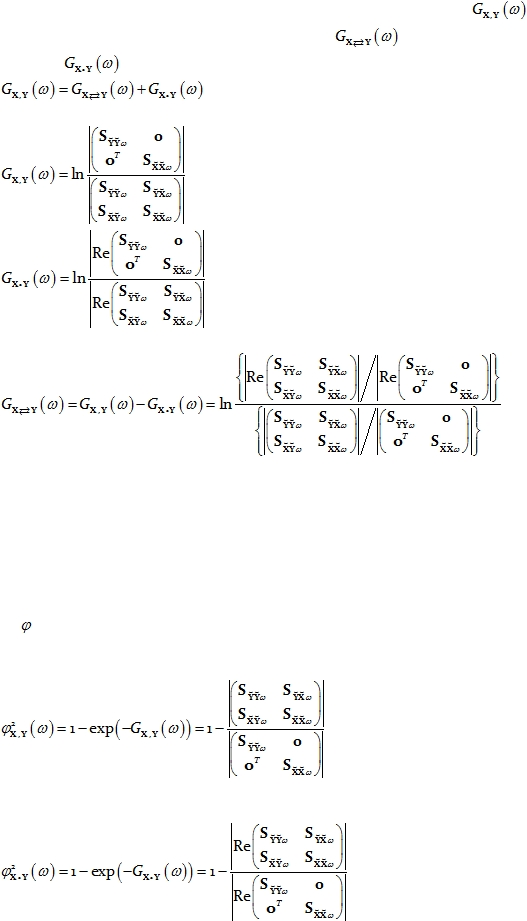
Cite as: “RD Pascual-Marqui: Instantaneous and lagged measurements of linear and nonlinear dependence between groups of
multivariate time series: frequency decomposition. arXiv:0711.1455 [stat.ME], 2007-November-09, http://arxiv.org/abs/0711.1455 ”
Page 11 of 18
For two multivariate time series, the measure of nonlinear dependence
is
expressed as the sum of lagged nonlinear dependence
and instantaneous
nonlinear dependence
:
Eq. 46
with:
Eq. 47
Eq. 48
and:
Eq. 49
In Eq. 47, Eq. 48, and Eq. 49, the Hermitian covariance matrices are defined for the
normalized discrete Fourier transform vectors (Eq. 7 to Eq. 12).
All three measures are non-negative. They take the value zero only when there is
independence of the pertinent type (lagged, instantaneous, or both).
These measures of nonlinear dependence can be associated with measures phase
synchronization
as follows.
The phase synchronization between two multivariate time series is:
Eq. 50
The instantaneous phase synchronization between two multivariate time series is:
Eq. 51
The lagged phase synchronization between two multivariate time series is:

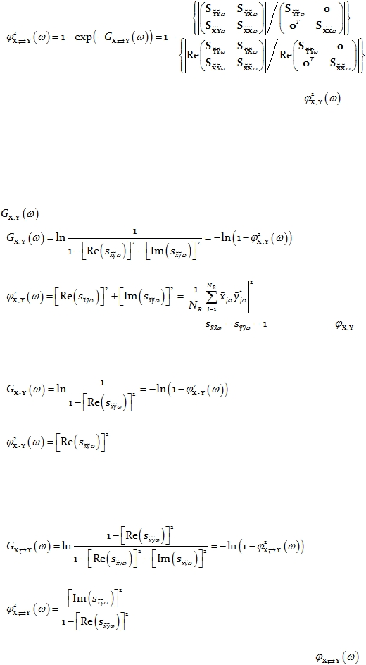
Cite as: “RD Pascual-Marqui: Instantaneous and lagged measurements of linear and nonlinear dependence between groups of
multivariate time series: frequency decomposition. arXiv:0711.1455 [stat.ME], 2007-November-09, http://arxiv.org/abs/0711.1455 ”
Page 12 of 18
Eq. 52
The phase synchronization between two multivariate time series
given by
Eq. 50 corresponds to the square of the “general phase synchronization” previously defined
in Pascual-Marqui (2007a; see Eq. 15 therein).
In order to illustrate and further motivate these measures of nonlinear dependence, a
detailed analysis for the simple case of two univariate time series is presented.
In the case that the two time series are univariate, the measure of nonlinear
dependence
in Eq. 47 is:
Eq. 53
with phase synchronization:
Eq. 54
Note that by definition, due to the normalization,
. In Eq. 54,
is the
classical measure of phase synchronization.
The measure of instantaneous nonlinear dependence is:
Eq. 55
with instantaneous phase synchronization:
Eq. 56
which, not surprisingly, is directly related to the real part of the complex valued coherency
of the normalized time series.
Finally, in the particular case of univariate time series, the measure of lagged
nonlinear dependence is:
Eq. 57
with lagged phase synchronization:
Eq. 58
The lagged phase synchronization between two univariate time series
given
by Eq. 58
corresponds to the “general lagged phase synchronization”
(i.e. the “zero-lag

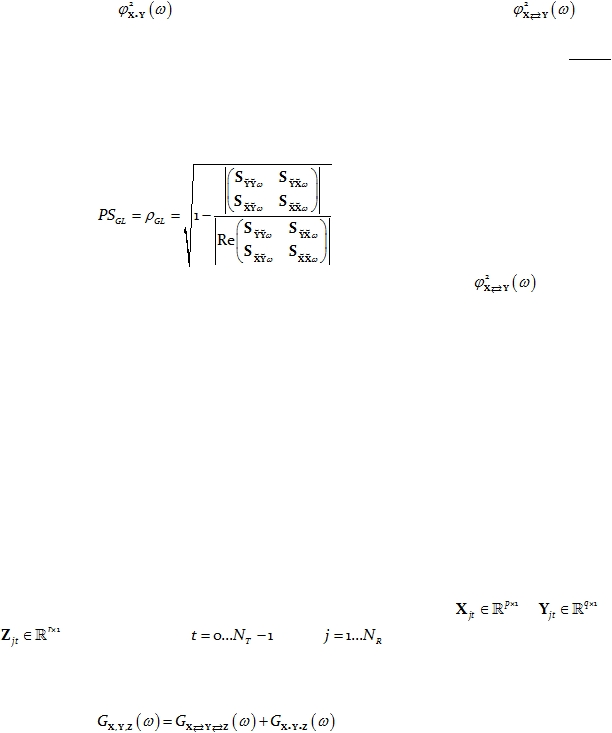
Cite as: “RD Pascual-Marqui: Instantaneous and lagged measurements of linear and nonlinear dependence between groups of
multivariate time series: frequency decomposition. arXiv:0711.1455 [stat.ME], 2007-November-09, http://arxiv.org/abs/0711.1455 ”
Page 13 of 18
removed” general phase synchronization)” previously defined in Pascual-Marqui (2007a), see
Eq. 33 therein.
It is worth stressing the asymmetry in the results for the instantaneous phase
synchronization
(Eq. 56) and the lagged phase synchronization
(Eq. 58).
While the instantaneous phase synchronization
is the real part of the complex valued
coherency
for the normalized time series, the lagged phase synchronization is not
the
imaginary part. Ideally, the lagged phase synchronization is a measure that is less affected by
instantaneous nonlinear dependence.
In our previous related study (Pascual-Marqui 2007a), the definition given there for
the “zero-lag removed general phase synchronization” (see Eq. 28 therein) was:
Eq. 59
The new definition given here for the lagged phase synchronization
is given by Eq.
52. Both definitions (Eq. 52
and Eq. 59) are identical for the case of two
univariate time
series. However, they are different for the multivariate case. Whereas the old definition in
Eq. 59
lumps together all variables from X and Y, the new definition given here in Eq. 52
conserves the multivariate structure of the two multivariate time series. The improvement of
the new lagged phase synchronization
in Eq. 52
is that it measures the lagged nonlinear
dependence between the two multivariate time series without being affected by the
covariance structure within each multivariate time series. The shortcoming of the old
definition from our previous study (Pascual-Marqui 2007a), shown in Eq. 59, is that it is
contaminated by the dependence structures of the univariate time series within X
and
within Y.
7.
Measures of nonlinear dependence (phase synchronization type)
between groups of multivariate time series
Consider the case of three multivariate time series
,
, and
, for discrete time
, with
denoting the j-th time segment.
The measures of nonlinear dependence between the three multivariate time series
are related in the usual way:
Eq. 60
and are given by:

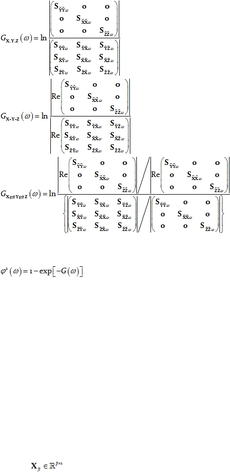
Cite as: “RD Pascual-Marqui: Instantaneous and lagged measurements of linear and nonlinear dependence between groups of
multivariate time series: frequency decomposition. arXiv:0711.1455 [stat.ME], 2007-November-09, http://arxiv.org/abs/0711.1455 ”
Page 14 of 18
Eq. 61
Eq. 62
Eq. 63
Phase synchronization for each type of measure of linear dependence in Eq. 60 can be
defined by the general relation (see e.g. Pierce 1982):
Eq. 64
The generalization of these definitions to any number of multivariate time series is
straightforward.
It is important to emphasize here that these measures of nonlinear dependence for
groups of multivariate time series can be applied in the field of neurophysiology. In this
case, the time series consist of electric neuronal activity at several brain locations, and the
measures of dependence are interpreted as “connectivity” between locations. When
considering several brain locations, these new measures can be used to test for the existence
of distributed cortical networks, whose activity can be estimated with exact low resolution
brain electromagnetic tomography (Pascual-Marqui 2007b).
8.
Measures of nonlinear dependence (phase synchronization type)
between all univariate time series
A particular case of interest consists of measuring the nonlinear dependence between
all the univariate time series that form part of the vector time series. For instance, consider
the vector time series
. In this case, since each univariate time series on its own is

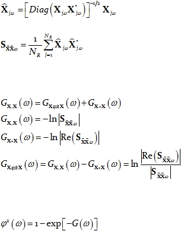
Cite as: “RD Pascual-Marqui: Instantaneous and lagged measurements of linear and nonlinear dependence between groups of
multivariate time series: frequency decomposition. arXiv:0711.1455 [stat.ME], 2007-November-09, http://arxiv.org/abs/0711.1455 ”
Page 15 of 18
of interest, each one must be normalized. For this particular purpose we adopt the
definition:
Eq. 65
which normalizes each variable. The corresponding covariance matrix is:
Eq. 66
Then the measures of nonlinear dependence between all “p” univariate time series of
X
are:
Eq. 67
Eq. 68
Eq. 69
Eq. 70
Phase synchronization for each type of measure of linear dependence in Eq. 67 can be
defined by the general relation (see e.g. Pierce 1982):
Eq. 71
As a consistency check, it can easily be verified that when these definitions are
applied to a vector time series with 2 components, the same results are obtained as in the
case of two univariate time series (Eq. 53, Eq. 55, and Eq. 57).
9.
Conclusions
1. Previous related work (Pascual-Marqui 2007a) was limited to measures of
dependence between two multivariate time series. This study generalizes the definitions to
include measures of dependence between any number of multivariate time series.
2. Previous measures for lagged dependence between two vector time series (Pascual-
Marqui 2007a) were inadequately affected by the dependence structure of the univariate
time series within each vector time series. This study adequately partials out the
dependence structures within each vector time series.
3. A new measure for instantaneous linear and non-linear dependence is introduced.
4. The measures of dependence introduced here have been developed for discrete
frequency components. However, they can as well be applied to any frequency band, defined
as a set of discrete frequencies (which can even be disjoint). In this case, the Hermitian
covariance matrices to be used in the equations for the measures of dependence should now
correspond to the pooled matrices (i.e. the average Hermitian covariance over all discrete
frequencies in the set defining the frequency band).
5. Inference methods for the measures of linear dependence are described.

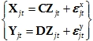
Cite as: “RD Pascual-Marqui: Instantaneous and lagged measurements of linear and nonlinear dependence between groups of
multivariate time series: frequency decomposition. arXiv:0711.1455 [stat.ME], 2007-November-09, http://arxiv.org/abs/0711.1455 ”
Page 16 of 18
6. All the measures of dependence can be based on any form of time-varying Fourier
transforms or wavelets, such as, for instance, Gabor or Morlet transforms.
7. The new measures of dependence between any number of multivariate time series
can be applied to the study of brain electrical activity, which can be estimated non-
invasively from EEG/MEG recordings with methods such as eLORETA (Pascual-Marqui
2007b). When considering several brain locations jointly, these new measures can be used to
test for the existence of distributed cortical networks. Previous methodology explores the
connections between all possible pairs of locations, while the new “network approach” can
test the joint dependence of several locations.
Appendix 1: Zero-lag contribution
to coherence and phase
synchronization: problem description
In some fields of application, the coherence or phase synchronization between two
time series corresponding to two different spatial locations is interpreted as a measure of the
“connectivity” between those two locations.
For example, consider the time series of scalp electric potential differences (EEG:
electroencephalogram)
at two locations. The coherence or phase synchronization is
interpreted by some researchers as a measure of “connectivity” between the underlying
cortices (see e.g. Nolte et al 2004 and Stam et al 2007).
However, even if the underlying cortices are not actually connected, significantly
high coherence or phase synchronization might still occur due to the volume conduction
effect: activity at any cortical area will be observed instantaneously (zero-lag) by all scalp
electrodes.
As a possible solution to this problem, the electric neuronal activity distributed
throughout the cortex can be estimated from the EEG by using imaging techniques such as
standardized or exact low resolution brain electromagnetic tomography (sLORETA,
eLORETA) (Pascual-Marqui et al 2002; Pascual-Marqui 2007b). At each voxel in the cortical
grey matter, a 3-component vector time series is computed, corresponding to the current
density vector with dipole moments along axes X, Y, and Z. This tomography has the unique
properties of being linear, of having zero localization error, but of having low spatial
resolution. Due to such spatial “blurring”, the time series will again suffer from non-
physiological inflated values of zero-lag coherence and phase synchronization.
Formally, consider two different spatial locations where there is no actual activity.
However, due to a third truly active location, and because of low spatial resolution (or
volume conductor type effect), there is some measured activity at these locations:
Eq. 72:

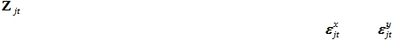
Cite as: “RD Pascual-Marqui: Instantaneous and lagged measurements of linear and nonlinear dependence between groups of
multivariate time series: frequency decomposition. arXiv:0711.1455 [stat.ME], 2007-November-09, http://arxiv.org/abs/0711.1455 ”
Page 17 of 18
where
is the time series of the truly active location; C and D are matrices determined by
the properties of the low spatial resolution problem; and
and
are independent and
identically distributed random white noise.
In this model, although X
and Y
are not “connected”, coherence and phase
synchronization will indicate some connection, due to zero-lag spatial blurring.
Things can get even worse due to the zero-lag effect. Suppose that two time series are
measured under two different conditions in which the zero-lag blurring effect is constant.
The goal is to perform a statistical test to compare if there is a change in connectivity. Since
the zero-lag effect is the same in both conditions, then it should seemingly not account for
any significant difference in coherence or phase synchronization. However, this might be
very misleading. In the model in Eq. 72, a simple increase in the signal to noise ratio (e.g. by
increasing the norms of C
and D) will produce an increase in coherence and phase
synchronization, due again to the zero-lag effect. This example shows that the zero-lag
effect can render meaningless a comparison of two or more conditions.
Acknowledgements
I have had extremely useful discussions with G. Nolte, who pointed out a number of
embarrassing inconsistencies I wrote into
the first draft of the previous related technical
report
(Pascual-Marqui 2007a). Those discussions partly motivated the new methods
developed in this study.
References
C Allefeld, J Kurths
(2004);
Testing for phase synchronization. International Journal
of Bifurcation and Chaos, 14: 405-416.
DR Brillinger (1981): Time series: data analysis and theory. McGraw-Hill, New York.
J Geweke
(1982): Measurement of Linear Dependence and Feedback Between
Multiple Time Series. Journal of the American Statistical Association, 77: 304-313.
H Hotelling (1936):Relations between two sets of variables. Biometrika 28: 321-377.
JT Kent (1983): Information gain and a general measure of correlation. Biometrika, 70:
163-173.
S Kullback (1967): On Testing Correlation Matrices. Applied Statistics, 16: 80-85.
BFJ Manly (1997): Randomization, bootstrap and MonteCarlo methods in biology.
Chapman & Hall, London.
KV Mardia, JT Kent, JM Bibby (1979): Multivariate Analysis. Academic Press, London.
TE Nichols, AP Holmes
(2001):
Nonparametric permutation tests for functional
neuroimaging: a primer with examples. Human Brain Mapping, 15: 1-25.
G Nolte, O Bai, L Wheaton, Z Mari, S Vorbach, M Hallett (2004): Identifying true
brain interaction from EEG data using the imaginary part of coherency. Clin Neurophysiol.,
115: 2292-2307.
RD Pascual-Marqui
(2002):
Standardized low resolution brain electromagnetic
tomography (sLORETA): technical details. Methods & Findings in Experimental & Clinical
Pharmacology, 24D: 5-12.

Cite as: “RD Pascual-Marqui: Instantaneous and lagged measurements of linear and nonlinear dependence between groups of
multivariate time series: frequency decomposition. arXiv:0711.1455 [stat.ME], 2007-November-09, http://arxiv.org/abs/0711.1455 ”
Page 18 of 18
RD Pascual-Marqui (2007a): Coherence and phase synchronization: generalization to
pairs of multivariate time series, and removal of zero-lag contributions. arXiv:0706.1776v3
[stat.ME] 12 July 2007, http://arxiv.org/abs/0706.1776 .
RD Pascual-Marqui (2007b): Discrete, 3D distributed, linear imaging methods of
electric neuronal activity. Part 1: exact, zero error localization. arXiv:0710.3341 [math-ph],
2007-October-17, http://arxiv.org/abs/0710.3341 .
E Pereda, R Quian-Quiroga, J Bhattacharya (2005): Nonlinear multivariate analysis of
neurophysiological signals. Prog Neurobiol., 77: 1-37.
DA Pierce (1982): Comment on J Geweke’s “Measurement of Linear Dependence and
Feedback Between Multiple Time Series”. Journal of the American Statistical Association, 77:
315-316.
R Quian Quiroga, A Kraskov, T Kreuz, P Grassberger (2002): Performance of different
synchronization measures in real data: a case study on electroencephalographic signals.
Phys. Rev. E, 65: 041903.
MG Rosenblum, AS Pikovsky, J Kurths(1996): Phase synchronization of chaotic
oscillators. Phys. Rev. Lett., 76: 1804-1807.
CJ Stam, G Nolte, A Daffertshofer (2007): Phase lag index: Assessment of functional
connectivity from multi channel EEG and MEG with diminished bias from common sources.
Human Brain Mapping, 28: 1178-1193.
P Tass, MG Rosenblum, J Weule, J Kurths, A Pikovsky, J Volkmann, A Schnitzler, HJ
Freund (1998): Detection of n:m phase locking from noisy data: application to
magnetoencephalography. Phys. Rev. Lett., 81: 3291-3294.